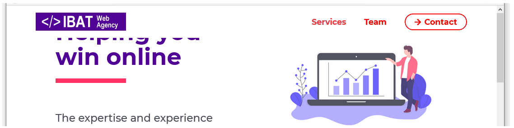
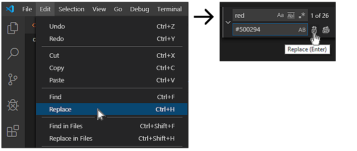
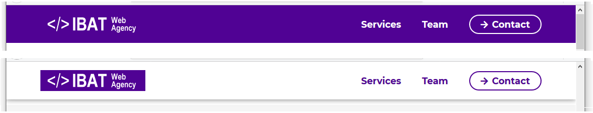
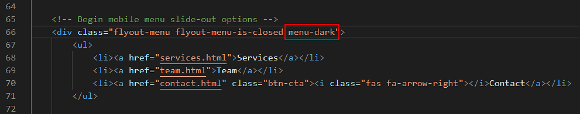
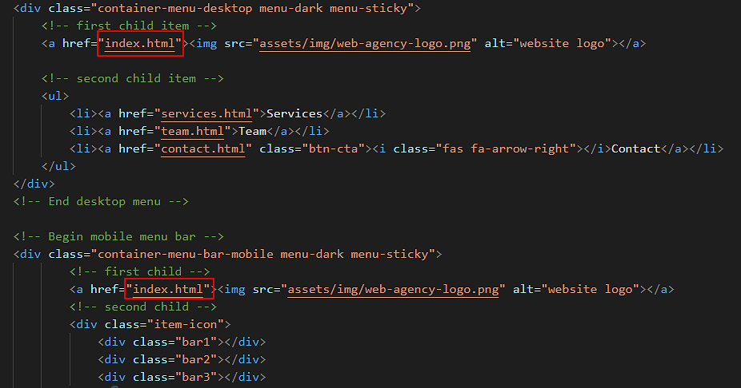
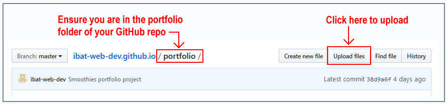

In this task you will use template content to add desktop and mobile menus to the 'Web Agency' project you created earlier and to which you then added a contact form page and a footer.
You can display a finished version of the project web pages on GitHub by clicking the image below.
Learning Goals
At the end of this Tutorial you will be able to:
Copy selected HTML with text content and JavaScript code from a template file to a sample web page.
Copy selected CSS from a template file to a stylesheet for a sample web page.
Scroll down a few lines to the mobile menu section and copy-and-paste the new logo and hyperlink from the desktop menu to here.
Save the index.html web page and view the result in your web browser for both desktop and mobile screen sizes.
Scroll down a few lines to the mobile menu section and copy-and-paste the new menu options from the desktop menu to here.
Save the index.html web page and view the result in your web browser for both desktop and mobile screen sizes.
Verify that the menu options all work correctly when clicked.
Control web page scrolling
When you display the index.html web page in your web browser, you can see that the top of the page is partly 'hidden' behind the menu.

This is because of the menu-sticky class attached to both the container-menu-desktop and the container-menu-bar-mobile parent containers.
In the style.css stylesheet, you can see that the .menu-sticky style has a position value of fixed.
As a result, the rest of the web page will not 'see' the container-menu-desktop and container-menu-bar-mobile sections and will act like they are not there.
To fix this issue, in the style.css file, add a padding-top property to the body selector for the entire web page.
Give it a value of 72px, which is the same height as the height of your desktop and mobile menu containers.
When finished, save your style.css file and test your menus for both desktop and mobile screens. You can see that the menu containers no longer hide any of the web page content.
Update the mobile menu content and hyperlinks
In the lower part of the mobile menu, under the <hr> horizontal rule line, you can include some text about yourself, an image and some hyperlinks.
If you want to include a profile or other image, the image should be located in your websites/assets/img folder.
<imgsrc="../../assets/img/profile-pic.jpg"alt="Mary Smith web designer, Dublin">
If you wish to include an email address or social media hyperlinks, replace the template-provided details with your own. Delete any details in the template you do not want to include.
If you want to link your website's Home page, the link should be as follows.
<ahref="../../index.html">Home</a>
If you want to link your website's Portfolio page, the link should be as follows.
<ahref="../index.html">Portfolio</a>
And if you want to link your website's Contact Form page, the link should be as follows.
<ahref="../../contact/index.html">Contact</a>
Save your index.html web page and view it in your web browser.
Update the menu colours
In the menus-template.html file you copied-and-pasted into your index.html web page, the desktop container DIV of container-menu-desktop and the two container DIVS for the mobile menu of container-menu-bar-mobile and flyout-menu are assigned a class of menu-light.
In the menus-template.css file you copied-and-pasted into your style.css stylesheet, this menu-light class sets text and hyperlinks red against a white background. You can see just a few examples of these colour properties and values below.
Let's update this red colour to match the purple colour of #500294 used in the web page.
In the style.css stylesheet, scroll to the top of the file.
On the Visual Studio Code menu, click the Edit menu and then click the Replace command.
A new search-and-replace dialog box appears at the top-right of the Visual Studio Code screen.

In the first field, enter red.
In the second, enter #ff5000.
Click the left icon for Replace. Do not click the right icon for Replace All.
One by one, replace every occurrence of the colour red with #500294 in your stylesheet.
(If you choose the Replace All option, Visual Studio Code will replace the letters 'red' inside words such as 'centered' that may be written in comments.)
Save the style.css file and view the web page in your web browser.
Add the JavaScript menu style-swapping effect
Your final step is to use some JavaScript code in the menus-template.html file you copied-and-pasted into your index.html web page to create the following effect:
When the user displays the top of the web page, either on desktop or mobile screens, the menu has a purple background and the hyperlinks are displayed in white text.
When the user scrolls down the web page, the purple background is replaced by a solid white colour. And the colour of the text hyperlinks changes to purple.

To achieve this effect, follow these steps.
In the index.html file, for both the container-menu-desktop and container-menu-bar-mobile containers, replace the class of menu-light with menu-transparent class as shown below.
Scroll down to near the bottom of the file. Under the comment of "// Code for menus with transparent background" is a line of JavaScript that begins with the // comment symbol.
In JavaScript code, the symbol "//" has the same effect as <!-- comment --> in HTML and /* comment */ in CSS.
Remove the "//" from the beginning of this line as shown below.
Next, edit the JavaScript code as shown below.
Save the index.html file and view the web page in your web browser.
One final change: for the flyout-menu, replace the menu-light class with the menu-dark class as shown below.

Save the style.css file and view the web page in your web browser.
When the user scrolls down the web page:
This JavaScript code removes the menu-dark class and replaces it with the menu-light class. It also adds the menu-drop-shadow class that places a drop shadow effect under the menu.
When the user scrolls back up the web page:
The JavaScript code removes the menu-light and menu-drop-shadow classes, and replaces them with the original menu-dark class.
Update the other three web pages
You need to apply the menu-related updates you have made to your index.html web page to the three other web pages in your 'Travel' project. Follow these steps.
Open your services.html, team.html and contact.html web pages.
Open your index.html web page, and copy all the menu-related content from the top of the page.
Paste the menu-related content into the top of your services.html, team.html and contact.html pages, to just after the opening <body> tag.
Scroll to the bottom of your index.html web page, and copy all the JavaScript code for menus.
For your services.html, team.html and contact.html web pages, scroll to near the end of the web pages, to just before the JavaScript for Cookie Consent Popup Message, and then paste the JavaScript code.
For your services.html, team.html and contact.html web pages, change the link destination for the website logo from # (which simply brings the user to the top of the web page) to index.html (which brings the user to the home page of the four-page 'Web Agency' website).

Save all your web pages and view them in your web browser.
That's it. You have now completed your 'Web Agency' project. (Except for the possible next step.)
Update the styles for flyout menus
If you downloaded the templates.zip file before 12 May, 2020, you may want to make the following change to the flyout menu on mobile screens.
This update will ensure the text and image styles for flyout menu remain in effect in the 1-2 seconds it takes for the menu to 'slide out' to the right of the screen after the user taps the 'X' symbol.
In Visual Studio Code, display the style.css stylesheet.
Click the Edit menu and then click the Replace command.
A new search-and-replace dialog box appears at the top-right of the Visual Studio Code screen.
In the first field, enter the following:.flyout-menu.flyout-menu-is-open
In the second field, enter the following:.flyout-menu
Click the right icon for Replace All.
When finished, save your style.css file.
That's it.
Validate your HTML files
To check your HTML is correct, use the official W3C Markup Validation Service. Follow these steps.
One after the other, copy and paste your four HTML files into the box named Enter the Markup to validate.
Click the Check button.
If you see any errors, return to your HTML file, fix the errors, save the file, and copy the entire file again.
In the HTML Validator, click the Back button of your web browser to again display the Validate by Direct Input tab. Click once in the tab and paste in your corrected HTML file. Your new, pasted-in file will replace the earlier version. Finally, click the Check button.
Validate your CSS file
To check your CSS is correct, use the official W3C CSS Validation Service. Follow these steps.
Copy and paste your CSS file into the box named Enter the CSS you would like validated.
Click the Check button.
If you see any errors (other than those related to the fluid typographic equation or as shown below or to the 'overscroll-behavior' property), return to your style.css file in your text editor, fix the errors, save the file, and copy the entire file again.
In the CSS Validator, click the Back button of your web browser to again display the By direct input tab. Click once in the tab and paste in your corrected CSS file. Your new, pasted-in file will replace the earlier version. Finally, click the Check button.
Upload your project to GitHub
The final step is to upload your project to GitHub.
All the files for this project are in a sub-folder named web-agency of your websites/portfolio folder.
So you will need to upload this web-agency sub-folder, which contains both files and other sub-folders, to your account on GitHub.
Open a new tab in your web browser and go to GitHub.com. If you are not already signed in to your GitHub account, sign in now.
On your GitHub home page, click the name of the repository ('repo') that holds your web pages. Its name will look as follows, where username is your chosen username on GitHub.
username.github.io
The next GitHub screen displayed should look as follows. Click on the portfolio folder.
On the next screen displayed, click the Upload files button.

In File/Windows Explorer on your computer, display your portfolio folder and then drag-and-drop the web-agency folder to the GitHub tab in your web browser.
After uploading the web-agency folder, scroll down to the bottom of the GitHub screen, enter a short message in the Commit changes box, click the Commit changes button, and wait for the upload to complete.
Your 'Web Agency' project with desktop and mobile menus is now published on GitHub at a web address similar to the following, where username is the username you have chosen for your GitHub account: